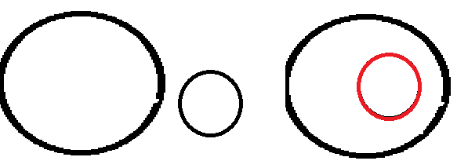
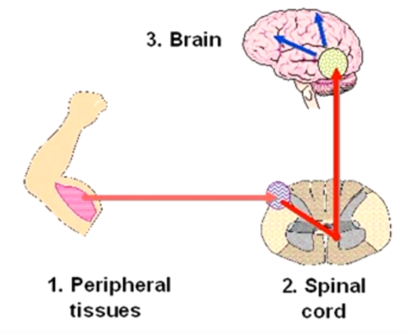
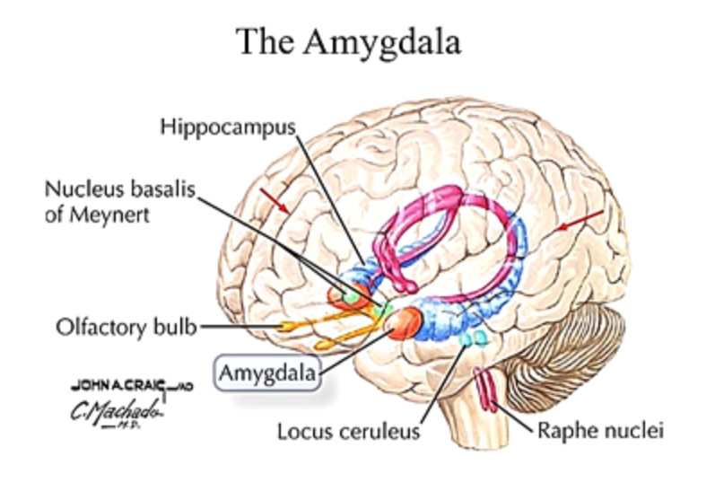
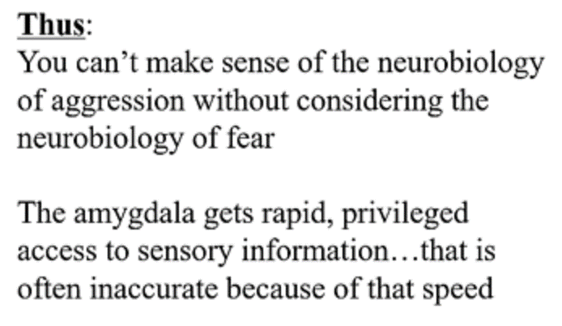
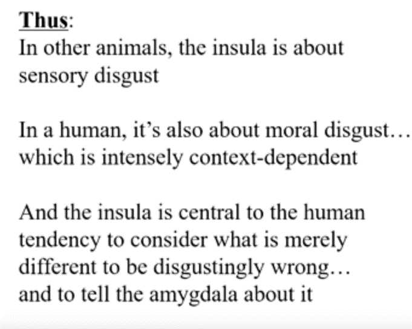
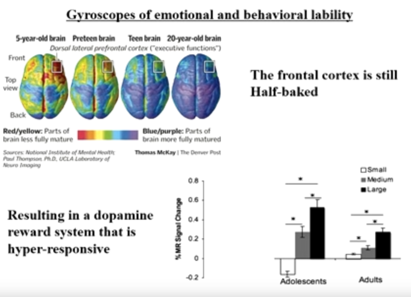
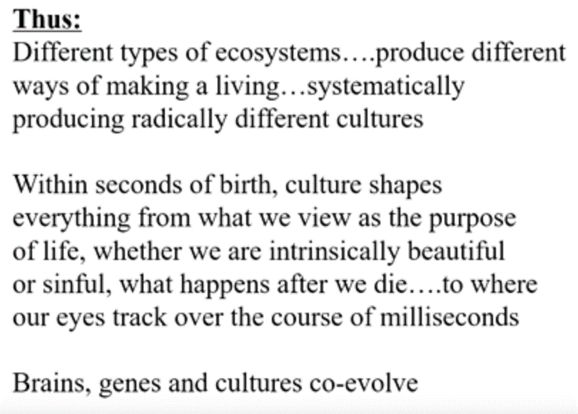
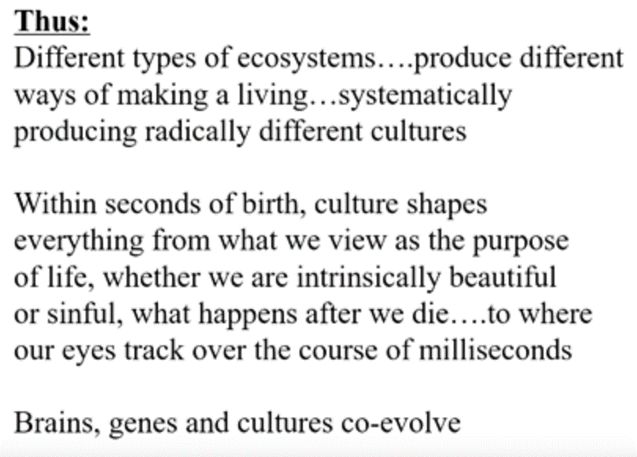
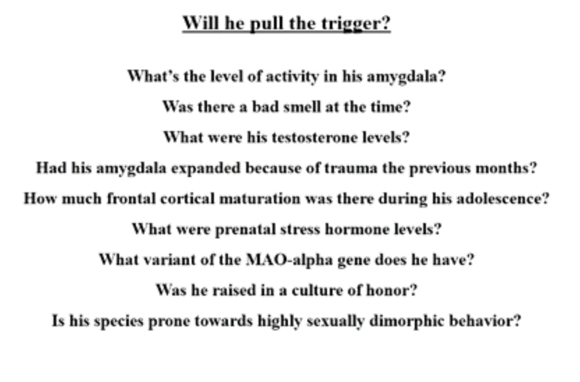
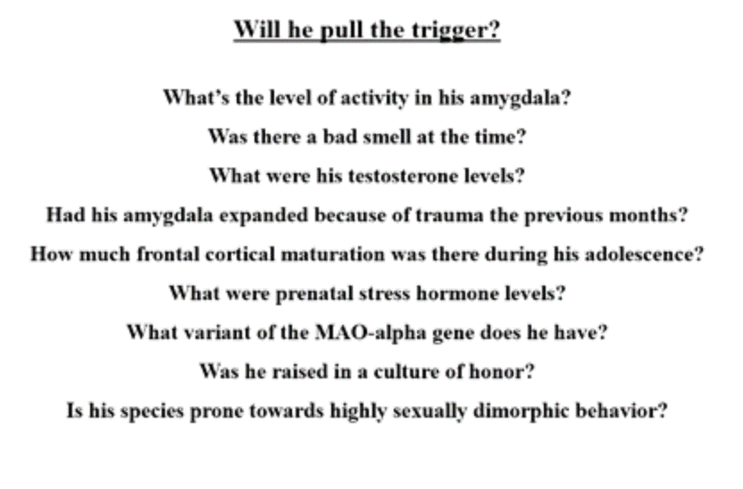

https://www.youtube.com/playlist?list=PL848F2368C90DDC3D
Behavioural evolution
Natural selection as an explanation for evolution
-
There are traits that are heritable
-
There is variability in those traits
- Sometimes there are new traits (mutations)
-
Some versions of those traits are adaptive (they make it more likely that more copies of genes are passed on to the next generation)
The same as above applies to behaviour (just replace traits with behaviour).
Sexual selection
Sexual selection is a mode of natural selection in which members of one biological sex choose mates of the other sex to mate with (intersexual selection), and compete with members of the same sex for access to members of the opposite sex (intrasexual selection). These two forms of selection mean that some individuals have greater reproductive success than others within a population, for example because they are more attractive or prefer more attractive partners to produce offspring. Successful males benefit from frequent mating and monopolizing access to one or more fertile females. Females can maximise the return on the energy they invest in reproduction by selecting and mating with the best males.
Natural and sexual selection often work against each other e.g. a brightly colored animal might attract more mates but also more predators.
Animals don't behave for the good of their species.
Three main factors driving behaviour
Based on three main factors:
-
Individual selection driven by maximizing the number of copies of your own genes. Reproducing.
-
Kin selection. Achieving 1 by increasing the number of copies of your own genes through reproduction of your next kins (the closer they are related the more genes you have in common). Corporate with relatives based on how closely related they are.
-
Reciprocal altruism. Only do good if good is returned. Equilibrium based on rock-paper-scissor situation competition is increased. Cooperative behaviour increases the likelihood of survival.
Tit-for-tat strategy (cooperate if the other cooperates, stop if they do and start again if they start again). Tit-for-tat is vulnerable to signal errors, if one party cooperates but due to a signal error it is received as cheating.
Forgiving tit-for-tat adds cooperation after a chain of cheating (giving it another try) but this is again open to exploitation.
The best strategy is starting off with T-F-T and then, after some trust has been established you switch to forgiving T-F-T
Detection and applying cheating is an important factor.
In practice there are multiple games playing out in parallel.
Humans are in-between tournament (difference between male and female body-size is big) and pair-bonding (monogamous) species
https://naturallawinstitute.com/2018/07/tournament-species-vs-pair-bonding-species/#gsc.tab=0

Examples of behaviour
Infanticide is found within groups of langur monkeys, lions, vervet monkeys, mountain gorillas and other species as well. Initial attempts were made to dismiss the events as abnormal, with a variety of reasons to set aside the behavior as psychopathological but not typical of the species. It tends to be adult males doing the killing. The actions are not random; the infants are the offspring of other males. It\'s a competitive strategy that reduces the other guy\'s reproductive success while improving the killer\'s since the female no longer has anything to mother and can now move back into the birthing cycle and have his offspring. There is a formula for this - competitive infanticide occurs when the time between births by the mother is shorter than the average reign for the top male. So the competitive infanticide is there to ensure that he doesn\'t miss out on the chance to breed with the female when she\'s busy rearing her offspring instead of mating with him.
With chimpanzees females leave the group at the age of puberty in order to avoid inbred (incest) (make the gen pool more diverse). Therefore, the group usually consists of males that are related to each other. While this discourages fights between the males (kinship selection) it usually leads to intergroup warfare, where the group of chimps organizes itself and does warfare against another group of chimps.
This relates to military techniques that aim to create a sense of kinship among the troops. This makes them a band of brothers that will cooperate with each other, though it can have divisive effects as well, such as was seen in the Vietnam War, because the group may agree to disagree with orders and commands from above, the hierarchical other.
Examples where reciprocal altruism out competes individual selection
A bio-geographic (or other) event occurs that separates out a subset from a larger group. This smaller subset soon becomes more inbred than the larger whole, simply as a by-product of being a smaller group. This translates into having a higher degree of relatedness, which introduces the whole business of kin selection. Because these guys are more closely related, they will work together more as a group and will end up outcompeting the original group members when they are reunited. This is called a founder effect.
 \ Another scenario is demonstrated through the example of two chickens, one that\'s highly aggressive and one that\'s more laid back. When competing one on one, the more aggressive chicken will lay more eggs, but there\'s the drawback in which a group of aggressive chickens will harass each other and thus impair their own breeding while the calmer group will lay more eggs because as a group they cause less grief for each other.
A>B but BB(as a group) > AA (while individual A's out compete B's as a group the BB's out compete the AA's)
https://www.robertsapolskyrocks.com/behavioral-evolution-ii.html
Not all traits are based on natural section but just a side effect of other traits (e.g. the chin of a human).
Molecular Genetics
Proteins hold the shapes of cells together, they form messengers and hormones, they are the enzymes that do all kinds of important stuff; proteins are the workhorses.\ \ So what codes for proteins? This is where genes come in. Genes specify (code for) proteins. Proteins are built from amino acids, of which there are approximately 20 that commonly occur. Each one has to be coded for with a different DNA sequence, a different DNA sequence of 3 letters (3 nucleotides). He notes that in the process DNA first specifies a code string of RNA which then specifies the protein construction (amino acid string). Thus if you know the DNA then you will know the RNA which in turn gives you a sense of the amino acids which will form the protein and knowing that informs you of the shape of the protein (different amino acids vary in their attraction toward water and these levels influence the ultimate shape) which clues you in on the function of the protein. That is the critical link from the DNA to the function and the notion of a behavior being genetically controlled.
Francis Crick is credited with establishing a central dogma of genetics - DNA codes for RNA which codes for proteins. Sapolsky focuses the listener on a subtle element of this dogma, which is that DNA is ultimately in charge, sitting around and deciding what will happen and when, and then releasing the instructions that become the RNA to protein chain. Surprisingly, DNA isn\'t always in charge. Viruses are mentioned as an example. Viruses are basically snippets of DNA that get into a living organism and hijack its DNA, taking over the plane and directing where it goes, making it function for the virus\'s desire. In the 1970\'s viruses made of RNA were discovered. The pathway is facilitated by enzymes which convert the RNA into DNA and start up the whole parasitic process. Accordingly, these are called retroviruses because they are reverting from RNA back to DNA.
Next up is the whole sibling chimpanzee percentage topic. You share 50% of your genes with a sibling, but you share 98% of your genes with chimpanzee. What? This is about the level we look at. For example, chimps and humans have noses, so that\'s a commonality when compared to a tree, which only has a nose when it\'s in \"The Lord of the Rings\" or wandering around Stanford. However, humans can have button noses, aristocratic noses, etc. which is a DNA difference but at a much more specific level.
The instruction booklet part of DNA is all about when and under what circumstances to activate and start and stop creating proteins. (For example, human growth hormone is released throughout life but has peak periods.) For better or worse this means that DNA doesn\'t \"know\" what it\'s doing. Instead it\'s a read-out that\'s under the control of lots of other factors. Among these are the regulatory sequences upstream from the gene. These might be called promoter or repressive sequences that promote or repress the expression of DNA snippets downstream. They are like switches. And they are turned on when the right event (internal or external) happens. These events are triggered by transcription factors. These might turn on single genes or whole networks in the DNA. On the flipside, any given gene can have a whole bunch of different promoters that it\'s waiting to hear from before it does its thing.
Behavioural Genetics
https://www.youtube.com/watch?v=GRYcSuyLiJk
Why do we do what we do?
Understanding the context!


Based on different parts of the brain



Pre-frontal cortex
Responsible for delayed gratification and impulse control


Dopamine
Reward system. Triggered by anticipation.

Environment

Sports team loyalties (and individuation, according to 69:00 Susan Fiske\'s studies) can override racial bias. Racial bias is not innate but acquired.
Hormones
Testosterone and Oxytocin
Testosterone doesn't make you more aggressive it just makes us defending our status stronger. E.g. in a hierarchy of monkey where A is stronger than B and B is stronger than C and so on, if you give monkey C testosterone he will not fight A,B but only stronger fight D;E....
In a test with humans where you could win a game by being more generous. Humans with higher testosterone levels were more generous.

Adolescence




Childhood

Genes
Not DNA determines what genes do (producing proteins) but environment does


Ancestors and culture

 

Evolution

 
